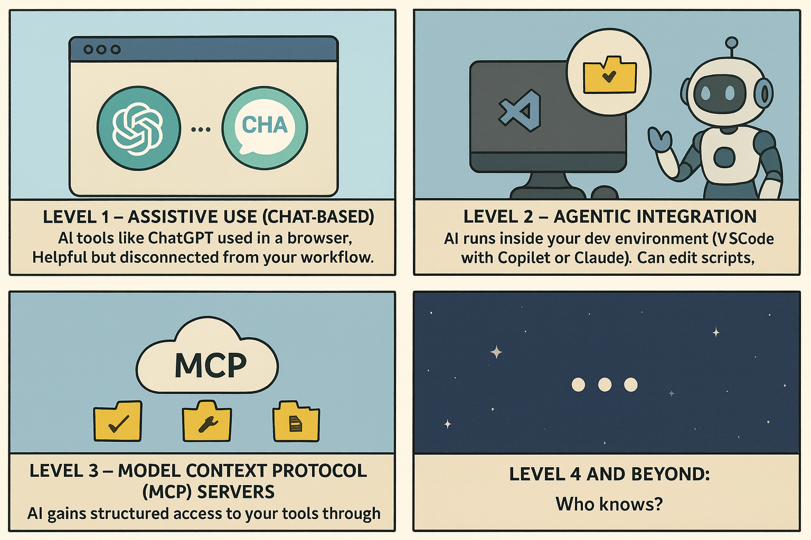

How I Built a Power BI Tool with AI (Dublin Demo)¶
On November 18th, I presented at the Dublin Fabric User Group on Power BI CI/CD: From Basic Automation to Agentic AI. The session covered why CI/CD matters for Power BI (version control, collaboration, quality control), what the technology stack looks like (PBIP, Git, VS Code), and how AI integration is evolving from chat assistants to agentic tools that can interact directly with your semantic models.
The demo showed how Power BI Projects (PBIP) unlocks AI-assisted development in ways .pbix files never could.
The takeaway: You cannot afford to wait.
Why CI/CD for Power BI?¶
CI/CD isn't just about deployment. It's an enabler for:
- Version Control: Track every change, roll back mistakes, understand model evolution
- Collaboration: Multiple developers working safely on the same models
- Visibility & Oversight: See who changed what and when
- Quality Control: Automated checks before changes go live
- Automation: Metadata extraction, documentation generation, quality analysis
- Agentic AI: AI tools that can read, understand, and interact with your models
- Professional Growth: Learn software engineering practices that make you more valuable
The foundation: PBIP saves your models as text files, making everything else possible.
Text-Based Models Change Everything¶
PBIP (Power BI Projects) saves your reports and semantic models as text files: - TMDL (Tabular Model Definition Language): Your tables, relationships, measures as readable text - PBIR (Power BI Report): Report definitions in JSON format
That metadata locked inside binary .pbix files? Now it's accessible.
This matters because AI can't work with what it can't read.
.pbix files? AI is blind. Text files? AI becomes your development partner, reading your schema, understanding relationships, building tools to analyze and automate.
The Basic Setup¶
Getting started is simpler than you think:
- Premium or Fabric workspace (required for PBIP)
- VS Code + Git installed locally
- GitHub or Azure DevOps account and repo
- Clone the repo to a local folder
- Enable GitHub Copilot (free or paid), Claude, or other AI coding assistant
- Enable TMDL extension in Power BI Desktop
- Save your models as PBIP format
- Link your Git repo with your Power BI workspace
Message: Using the native approach is quick and gives you much of the benefit.
You don't need pipelines or complex automation on day one. Version control + text-based models + AI coding assistant = immediate value.
Our Production Setup¶
For reference, here's what we run in production:
- Two long branches (TEST/PRD) + feature branches ("DEV") for changes
- VS Code + Azure DevOps for Git management
- CI pipelines to validate and merge changes
- CD pipelines to deploy with quality gates
- Best Practice Analyzer (BPA) automated checks on every deployment
- Metadata extraction and documentation generation
- Copilot for GitHub for agentic AI assistance
- Helper scripts in Python and PowerShell
Future roadmap: Model Context Protocol (MCP) servers, custom graph database for metadata, automated BPA fixes, and data quality edits.
Building Tools Through Conversation¶
I started by showing how our repo is set up, how TMDL files and PBIR files are structured. Then I ran the Tabular Editor Best Practice Analyzer locally to identify quality issues. I showed the custom Fixer script we use to automatically fix common problems, then demonstrated how we use agentic prompting with saved prompts to add descriptions to tables and measures.
The live demo came next: build a relationship visualizer using AI in real time.
Before the meetup, I'd spent about 10 minutes building the tool with GitHub Copilot, refining prompts until I had exactly what I needed. Another 10 minutes to document the process.
I captured both approaches in the building tools with AI prompts: - Iterative approach: 6 progressive prompts, each adding features (interactive HTML, multi-model dropdown, table filtering) - One-shot approach: Single comprehensive prompt for time-constrained demos
During the live demo, I used the one-shot prompt. One minute, one request: build a Python script that scans for TMDL files, parses relationships, and generates an interactive HTML visualization with filtering, legends, and CLI arguments.
Copilot delivered a working relationship visualizer, the kind of thing that normally takes hours or that you skip because the effort isn't worth it.
This only works because PBIP gave AI something to read.

Model Context Protocol: The Next Step¶
AI integration is evolving through distinct levels:

Level 1 – Assistive Use (Chat-Based)
AI tools like ChatGPT used in a browser. Helpful but disconnected from your workflow.
Level 2 – Agentic Integration
AI runs inside your dev environment (VS Code with Copilot or Claude). Can edit scripts, create files, trigger tasks. This is where most of us are today.
Level 3 – Model Context Protocol (MCP) Servers
AI gains structured access to your tools through the Model Context Protocol. Microsoft has official MCPs now released. Instead of just generating code, AI can interact with your semantic models directly: run best practice analysis, apply fixes, generate documentation, all through structured tool access.
Level 4 and beyond: Who knows?
PBIP is the foundation for all of this.
Without text-based models, AI stays stuck answering questions. With PBIP, AI becomes a partner that reads your models, understands them, and uses tools to transform them. Not convenience. Capability.
What This Opens Up¶
PBIP + agentic AI:
- Build custom analysis tools by describing what you want
- Automate quality checks against your models
- Generate documentation from your metadata
- Visualize model complexity
- Implement CI/CD with quality gates
- Get help refactoring and optimizing complex DAX
You're not learning to code. You're learning to articulate problems. AI handles implementation.
Get the Tool¶
Download: visualize_all_relationships.py
Full Documentation: Relationship Visualizer Tool
Prompts: Building Tools with AI (step-by-step guide)
What Makes This Tool Interesting¶
Not a static diagram generator, but an interactive analysis tool built by describing the problem to AI:
🔍 Full Repository Visibility
- Scans your entire repo recursively, finds all .SemanticModel folders
- Multi-model dropdown: analyze any model from one HTML file
- No manual configuration, just point it at your repo
🎯 Interactive Filtering - Model Selector: Switch between models via dropdown - Table Filter Panel: Show/hide tables to focus on complex model sections - Classifies fact vs. dimension tables based on relationship patterns
🔗 Relationship Visualization Modes - All Relations Mode: Click a table to see all its direct relationships highlighted - Filter Direction Mode: Visualizes transitive filter propagation, see the entire chain of tables filtered by your selection - Toggle between modes to understand different aspects of your model's behavior
📊 Visual Design - Fact tables (red boxes) vs. dimensions (teal circles) - Bidirectional relationships in purple with wider lines - Inactive relationships as dashed lines - Hover tooltips show cardinality and column mappings
🎨 Production-Ready Output - Self-contained HTML (500KB-2MB), zero external dependencies - Works offline, shareable with stakeholders, integrates into CI/CD - Interactive physics-based graph: zoom, pan, explore
Quick Start¶
The Point Wasn't the Tool¶
The relationship viewer is useful, but that's not the point.
PBIP + AI changes the equation. Problems too small to justify the effort become trivial. Ideas you never acted on because "it would take too long" are afternoon projects.
Your metadata was always valuable. PBIP makes it accessible. AI makes it actionable.
Start Now¶
Still using .pbix exclusively? You're working with one hand tied behind your back. Move to PBIP. Enable Copilot or Claude. Start experimenting.
The tools you build will fit your needs because you're directing AI based on your problems, not searching for generic solutions.
You cannot afford to wait. The technology is here, and it's transforming Power BI development.
Thank You, Dublin¶
Thanks to the Dublin Fabric User Group and everyone who attended. The questions were fantastic.
If you build something with PBIP + AI, let me know. The future of BI development is conversational, and it's already here.
Resources: - Tool Documentation - Prompts: Building Tools with AI - Scripts Folder - Tabular Editor: Agentic Development in Simple Terms
Connect:
Have questions or want to share what you've built? Open an issue or reach out!